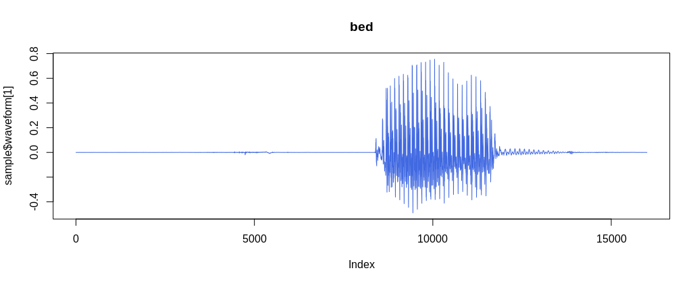
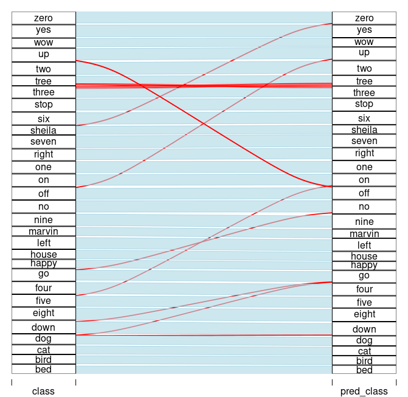

library(torch)
library(torchaudio)Simple audio classification with torch
torch
r
audio processing
This article translates Daniel Falbel’s post on “Simple Audio Classification” from TensorFlow/Keras to torch/torchaudio.
First published on the RStudio AI Blog on February 4, 2021.
This article translates Daniel Falbel’s ‘Simple Audio Classification’ article from tensorflow/keras to torch/torchaudio. The main goal is to introduce torchaudio and illustrate its contributions to the torch ecosystem. Here, we focus on a popular dataset, the audio loader and the spectrogram transformer. An interesting side product is the parallel between torch and tensorflow, showing sometimes the differences, sometimes the similarities between them.
Downloading and Importing
torchaudio has the speechcommand_dataset built in. It filters out background_noise by default and lets us choose between versions v0.01 and v0.02.
# set an existing folder here to cache the dataset
DATASETS_PATH <- "~/datasets/"
# 1.4GB download
df <- speechcommand_dataset(
root = DATASETS_PATH,
url = "speech_commands_v0.01",
download = TRUE
)
# expect folder: _background_noise_
df$EXCEPT_FOLDER
# [1] "_background_noise_"
# number of audio files
length(df)
# [1] 64721
# a sample
sample <- df[1]
sample$waveform[, 1:10]torch_tensor
0.0001 *
0.9155 0.3052 1.8311 1.8311 -0.3052 0.3052 2.4414 0.9155 -0.9155 -0.6104
[ CPUFloatType{1,10} ]sample$sample_rate
# 16000
sample$label
# bed
plot(sample$waveform[1], type = "l", col = "royalblue", main = sample$label)
Classes
df$classes [1] "bed" "bird" "cat" "dog" "down" "eight" "five"
[8] "four" "go" "happy" "house" "left" "marvin" "nine"
[15] "no" "off" "on" "one" "right" "seven" "sheila"
[22] "six" "stop" "three" "tree" "two" "up" "wow"
[29] "yes" "zero" Generator Dataloader
torch::dataloader has the same task as data_generator defined in the original article. It is responsible for preparing batches - including shuffling, padding, one-hot encoding, etc. - and for taking care of parallelism / device I/O orchestration.
In torch we do this by passing the train/test subset to torch::dataloader and encapsulating all the batch setup logic inside a collate_fn() function.
set.seed(6)
id_train <- sample(length(df), size = 0.7*length(df))
id_test <- setdiff(seq_len(length(df)), id_train)
# subsets
train_subset <- torch::dataset_subset(df, id_train)
test_subset <- torch::dataset_subset(df, id_test)At this point, dataloader(train_subset) would not work because the samples are not padded. So we need to build our own collate_fn() with the padding strategy.
I suggest using the following approach when implementing the collate_fn():
- begin with
collate_fn <- function(batch) browser(). - instantiate
dataloaderwith thecollate_fn() - create an environment by calling
enumerate(dataloader)so you can ask to retrieve a batch from dataloader. - run
environment[[1]][[1]]. Now you should be sent inside collate_fn() with access tobatchinput object. - build the logic.
collate_fn <- function(batch) {
browser()
}
ds_train <- dataloader(
train_subset,
batch_size = 32,
shuffle = TRUE,
collate_fn = collate_fn
)
ds_train_env <- enumerate(ds_train)
ds_train_env[[1]][[1]]The final collate_fn() pads the waveform to length 16001 and then stacks everything up together. At this point there are no spectrograms yet. We going to make spectrogram transformation a part of model architecture.
pad_sequence <- function(batch) {
# Make all tensors in a batch the same length by padding with zeros
batch <- sapply(batch, function(x) (x$t()))
batch <- torch::nn_utils_rnn_pad_sequence(batch, batch_first = TRUE, padding_value = 0.)
return(batch$permute(c(1, 3, 2)))
}
# Final collate_fn
collate_fn <- function(batch) {
# Input structure:
# list of 32 lists: list(waveform, sample_rate, label, speaker_id, utterance_number)
# Transpose it
batch <- purrr::transpose(batch)
tensors <- batch$waveform
targets <- batch$label_index
# Group the list of tensors into a batched tensor
tensors <- pad_sequence(tensors)
# target encoding
targets <- torch::torch_stack(targets)
list(tensors = tensors, targets = targets) # (64, 1, 16001)
}Batch structure is:
- batch[[1]]: waveforms -
tensorwith dimension (32, 1, 16001) - batch[[2]]: targets -
tensorwith dimension (32, 1)
Also, torchaudio comes with 3 loaders, av_loader, tuner_loader, and audiofile_loader- more to come. set_audio_backend() is used to set one of them as the audio loader. Their performances differ based on audio format (mp3 or wav). There is no perfect world yet: tuner_loader is best for mp3, audiofile_loader is best for wav, but neither of them has the option of partially loading a sample from an audio file without bringing all the data into memory first.
For a given audio backend we need pass it to each worker through worker_init_fn() argument.
ds_train <- dataloader(
train_subset,
batch_size = 128,
shuffle = TRUE,
collate_fn = collate_fn,
num_workers = 16,
worker_init_fn = function(.) {torchaudio::set_audio_backend("audiofile_loader")},
worker_globals = c("pad_sequence") # pad_sequence is needed for collect_fn
)
ds_test <- dataloader(
test_subset,
batch_size = 64,
shuffle = FALSE,
collate_fn = collate_fn,
num_workers = 8,
worker_globals = c("pad_sequence") # pad_sequence is needed for collect_fn
)Model definition
Instead of keras::keras_model_sequential(), we are going to define a torch::nn_module(). As referenced by the original article, the model is based on this architecture for MNIST from this tutorial, and I’ll call it ‘DanielNN’.
dan_nn <- torch::nn_module(
"DanielNN",
initialize = function(
window_size_ms = 30,
window_stride_ms = 10
) {
# spectrogram spec
window_size <- as.integer(16000*window_size_ms/1000)
stride <- as.integer(16000*window_stride_ms/1000)
fft_size <- as.integer(2^trunc(log(window_size, 2) + 1))
n_chunks <- length(seq(0, 16000, stride))
self$spectrogram <- torchaudio::transform_spectrogram(
n_fft = fft_size,
win_length = window_size,
hop_length = stride,
normalized = TRUE,
power = 2
)
# convs 2D
self$conv1 <- torch::nn_conv2d(in_channels = 1, out_channels = 32, kernel_size = c(3,3))
self$conv2 <- torch::nn_conv2d(in_channels = 32, out_channels = 64, kernel_size = c(3,3))
self$conv3 <- torch::nn_conv2d(in_channels = 64, out_channels = 128, kernel_size = c(3,3))
self$conv4 <- torch::nn_conv2d(in_channels = 128, out_channels = 256, kernel_size = c(3,3))
# denses
self$dense1 <- torch::nn_linear(in_features = 14336, out_features = 128)
self$dense2 <- torch::nn_linear(in_features = 128, out_features = 30)
},
forward = function(x) {
x %>% # (64, 1, 16001)
self$spectrogram() %>% # (64, 1, 257, 101)
torch::torch_add(0.01) %>%
torch::torch_log() %>%
self$conv1() %>%
torch::nnf_relu() %>%
torch::nnf_max_pool2d(kernel_size = c(2,2)) %>%
self$conv2() %>%
torch::nnf_relu() %>%
torch::nnf_max_pool2d(kernel_size = c(2,2)) %>%
self$conv3() %>%
torch::nnf_relu() %>%
torch::nnf_max_pool2d(kernel_size = c(2,2)) %>%
self$conv4() %>%
torch::nnf_relu() %>%
torch::nnf_max_pool2d(kernel_size = c(2,2)) %>%
torch::nnf_dropout(p = 0.25) %>%
torch::torch_flatten(start_dim = 2) %>%
self$dense1() %>%
torch::nnf_relu() %>%
torch::nnf_dropout(p = 0.5) %>%
self$dense2()
}
)
model <- dan_nn()
device <- torch::torch_device(if(torch::cuda_is_available()) "cuda" else "cpu")
model$to(device = device)
print(model)An `nn_module` containing 2,226,846 parameters.
── Modules ──────────────────────────────────────────────────────
● spectrogram: <Spectrogram> #0 parameters
● conv1: <nn_conv2d> #320 parameters
● conv2: <nn_conv2d> #18,496 parameters
● conv3: <nn_conv2d> #73,856 parameters
● conv4: <nn_conv2d> #295,168 parameters
● dense1: <nn_linear> #1,835,136 parameters
● dense2: <nn_linear> #3,870 parametersModel fitting
Unlike in tensorflow, there is no model %>% compile(...) step in torch, so we are going to set loss criterion, optimizer strategy and evaluation metrics explicitly in the training loop.
loss_criterion <- torch::nn_cross_entropy_loss()
optimizer <- torch::optim_adadelta(model$parameters, rho = 0.95, eps = 1e-7)
metrics <- list(acc = yardstick::accuracy_vec)Training loop
library(glue)
library(progress)
pred_to_r <- function(x) {
classes <- factor(df$classes)
classes[as.numeric(x$to(device = "cpu"))]
}
set_progress_bar <- function(total) {
progress_bar$new(
total = total, clear = FALSE, width = 70,
format = ":current/:total [:bar] - :elapsed - loss: :loss - acc: :acc"
)
}epochs <- 20
losses <- c()
accs <- c()
for(epoch in seq_len(epochs)) {
pb <- set_progress_bar(length(ds_train))
pb$message(glue("Epoch {epoch}/{epochs}"))
coro::loop(for(batch in ds_train) {
optimizer$zero_grad()
predictions <- model(batch[[1]]$to(device = device))
targets <- batch[[2]]$to(device = device)
loss <- loss_criterion(predictions, targets)
loss$backward()
optimizer$step()
# eval reports
prediction_r <- pred_to_r(predictions$argmax(dim = 2))
targets_r <- pred_to_r(targets)
acc <- metrics$acc(targets_r, prediction_r)
accs <- c(accs, acc)
loss_r <- as.numeric(loss$item())
losses <- c(losses, loss_r)
pb$tick(tokens = list(loss = round(mean(losses), 4), acc = round(mean(accs), 4)))
})
}
# test
predictions_r <- c()
targets_r <- c()
coro::loop(for(batch_test in ds_test) {
predictions <- model(batch_test[[1]]$to(device = device))
targets <- batch_test[[2]]$to(device = device)
predictions_r <- c(predictions_r, pred_to_r(predictions$argmax(dim = 2)))
targets_r <- c(targets_r, pred_to_r(targets))
})
val_acc <- metrics$acc(factor(targets_r, levels = 1:30), factor(predictions_r, levels = 1:30))
cat(glue("val_acc: {val_acc}\n\n"))Epoch 1/20
[W SpectralOps.cpp:590] Warning: The function torch.rfft is deprecated and will be removed in a future PyTorch release. Use the new torch.fft module functions, instead, by importing torch.fft and calling torch.fft.fft or torch.fft.rfft. (function operator())
354/354 [=========================] - 1m - loss: 2.6102 - acc: 0.2333
Epoch 2/20
354/354 [=========================] - 1m - loss: 1.9779 - acc: 0.4138
Epoch 3/20
354/354 [============================] - 1m - loss: 1.62 - acc: 0.519
Epoch 4/20
354/354 [=========================] - 1m - loss: 1.3926 - acc: 0.5859
Epoch 5/20
354/354 [==========================] - 1m - loss: 1.2334 - acc: 0.633
Epoch 6/20
354/354 [=========================] - 1m - loss: 1.1135 - acc: 0.6685
Epoch 7/20
354/354 [=========================] - 1m - loss: 1.0199 - acc: 0.6961
Epoch 8/20
354/354 [=========================] - 1m - loss: 0.9444 - acc: 0.7181
Epoch 9/20
354/354 [=========================] - 1m - loss: 0.8816 - acc: 0.7365
Epoch 10/20
354/354 [=========================] - 1m - loss: 0.8278 - acc: 0.7524
Epoch 11/20
354/354 [=========================] - 1m - loss: 0.7818 - acc: 0.7659
Epoch 12/20
354/354 [=========================] - 1m - loss: 0.7413 - acc: 0.7778
Epoch 13/20
354/354 [=========================] - 1m - loss: 0.7064 - acc: 0.7881
Epoch 14/20
354/354 [=========================] - 1m - loss: 0.6751 - acc: 0.7974
Epoch 15/20
354/354 [=========================] - 1m - loss: 0.6469 - acc: 0.8058
Epoch 16/20
354/354 [=========================] - 1m - loss: 0.6216 - acc: 0.8133
Epoch 17/20
354/354 [=========================] - 1m - loss: 0.5985 - acc: 0.8202
Epoch 18/20
354/354 [=========================] - 1m - loss: 0.5774 - acc: 0.8263
Epoch 19/20
354/354 [==========================] - 1m - loss: 0.5582 - acc: 0.832
Epoch 20/20
354/354 [=========================] - 1m - loss: 0.5403 - acc: 0.8374
val_acc: 0.876705979296493Making predictions
We already have all predictions calculated for test_subset, let’s recreate the alluvial plot from the original article.
library(dplyr)
library(alluvial)
df_validation <- data.frame(
pred_class = df$classes[predictions_r],
class = df$classes[targets_r]
)
x <- df_validation %>%
mutate(correct = pred_class == class) %>%
count(pred_class, class, correct)
alluvial(
x %>% select(class, pred_class),
freq = x$n,
col = ifelse(x$correct, "lightblue", "red"),
border = ifelse(x$correct, "lightblue", "red"),
alpha = 0.6,
hide = x$n < 20
)
Model accuracy is 87,7%, somewhat worse than tensorflow version from the original post. Nevertheless, all conclusions from original post still hold.